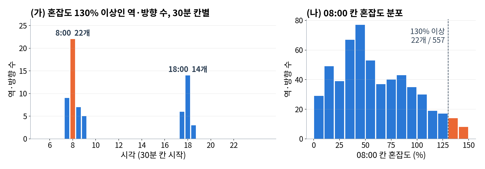
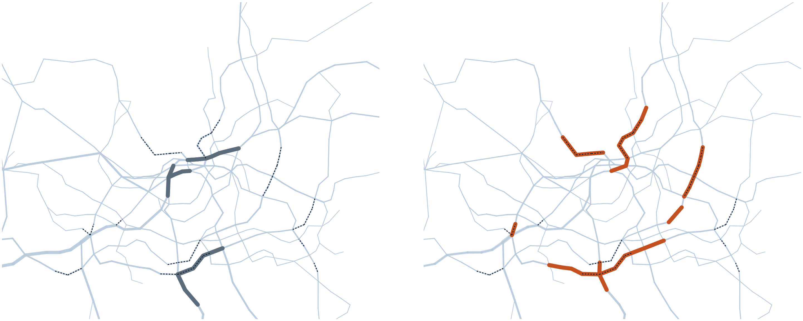
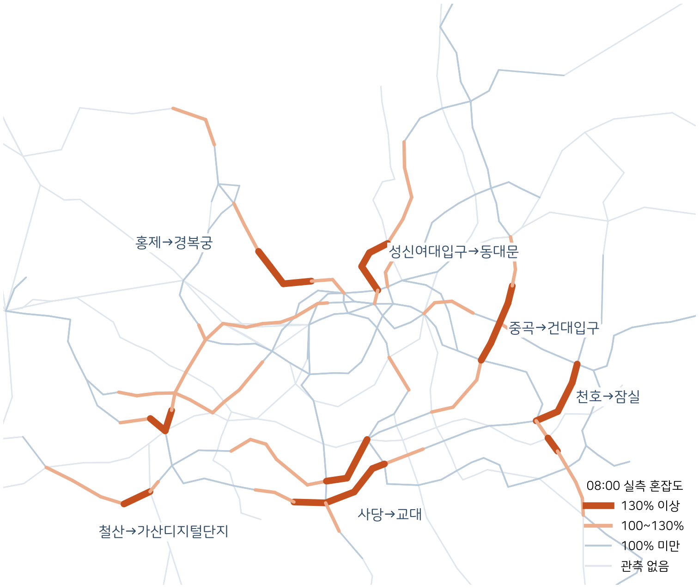
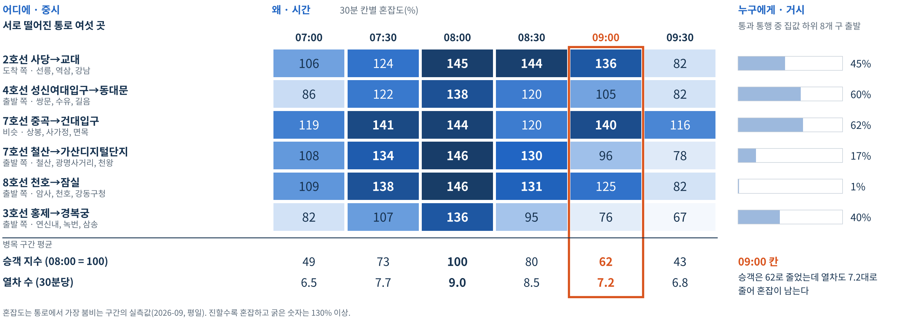
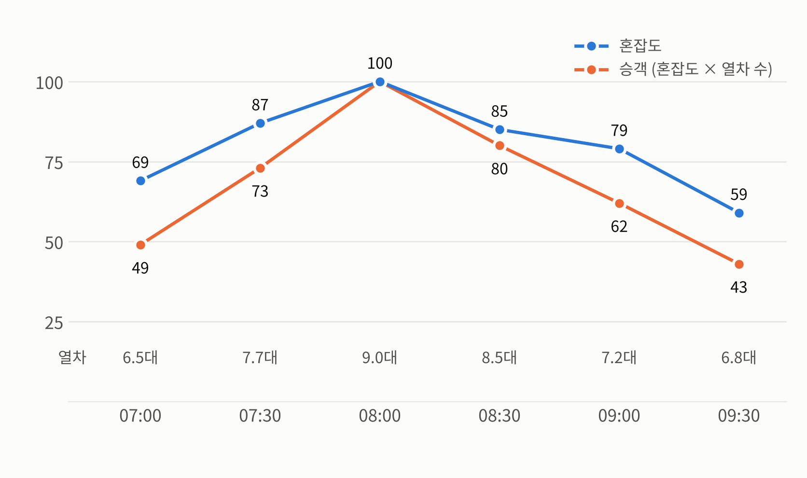
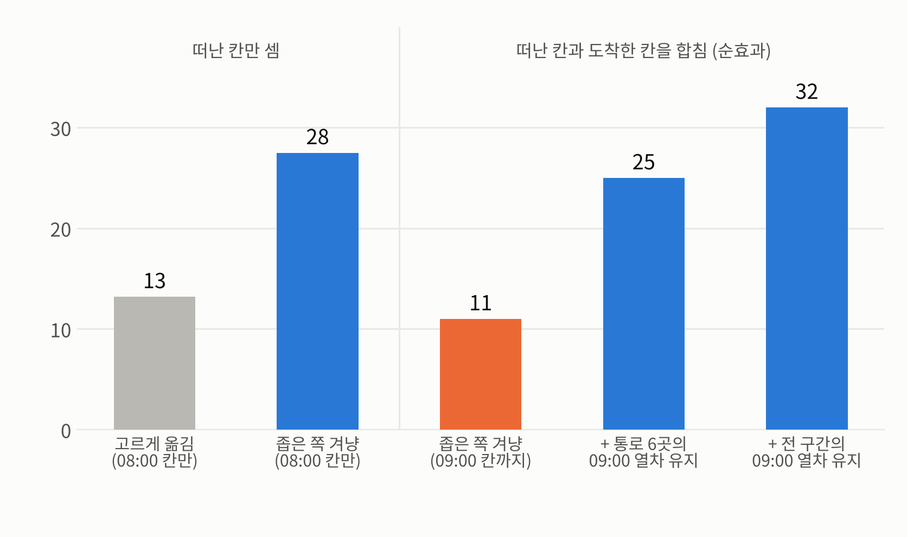

소셜 네트워크 과학 팀 프로젝트
150%를 달성한 뒤에 남은 혼잡
서울 지하철 아침 병목의 네트워크 분석
어디에, 누구에게, 왜 남았는가
팀 이름
발표자 · 팀원 이름
CONTENTS
01
연구 개요
주제 선정 배경
문제 제기
선행연구와 분석 구조
연구 목적과 핵심 질문
02
분석 프로세스
순서도
용어와 기준 · 범위와 규모
데이터 선정 및 가공
네트워크 정의
03
분석 결과
어디에: 구조 대 통행, 통로
누구에게: 손잡이, 집값 묶음
왜: 승객 대 열차
04
결론
최종 결과
해결 방향과 솔루션
기대효과 및 한계점
참고자료
01. 연구 개요
주제 선정 배경

서울교통공사 혼잡도 2026-09 평일, 역·방향 557개. 130%는 2023년 정부 기준에서 “주의”가 시작되는 선(서울신문 2023-03-28). 증회: 서울시 「지하철 혼잡도 완화 대책」.
서울시도 이 시간대를 겨냥해 2023-04~2025-03 혼잡 시간대 열차를 5차례 늘림. 목표는 노선별 최고 혼잡도 150% 이하
01. 연구 개요
문제 제기
표 1. 150% 기준으로 본 성과
| 지표 | 전 | 후 |
|---|---|---|
| 4호선 최대 혼잡도 | 185.5% (2022) | 143.6% (2025 4분기) |
| 150% 이상 구간 (평일 08:00 칸) | 12개 (2022-12) | 0개 (2024-06 이후) |
150% 이상은 2025-11 한 시점만 3개. 출처: 서울시 「지하철 혼잡도 완화 대책」, 헤럴드경제(2026-03-11), 서울교통공사 혼잡도(OA-12928)
표 2. 혼잡 단계 기준
| 기준 | 보통 | 주의 | 혼잡 | 심각 |
|---|---|---|---|---|
| 2023 정부 기준 | ~130% | 130~150% | 150~170% | 170%~ |
| 현행 관리 기준 | ~150% | 150~170% | 170~190% | 190%~ |
“출근시간 ‘지옥철’인데 혼잡도는 ‘보통’”
서울시의회 교통위원회 지적 (서울신문, 2026-09-02). 2026년 2분기 최고 구간 2호선 사당→방배 144.6%, 7호선 중곡→군자 144.0%도 공식 단계는 “보통”
그림 1. 시점별 130% 이상, 150% 이상 구간 수 (평일 08:00 칸)

2026-09에도 130% 이상 22개, 아침 통행의 28.0%가 이 구간을 지남. 노선별 최고 혼잡도 하나로는 이 혼잡이 어디서, 누구에게, 왜 남는지 보이지 않음
01. 연구 개요
선행연구와 분석 구조
분석 흐름과 단계별 비교
| ① 망 구조 운행망 | ② 흐름 + 아침 통행망 | ③ 용량 ÷ (열차 수 × 정원) | ④ 사람 누구에게 | ⑤ 시간 왜 | |
|---|---|---|---|---|---|
| 선행연구 | 구조만으로 본 중요도는 실제 흐름과 어긋남 Gao 외(2013), Lee 외(2008), 이정원·이강원(2017) | 운행망 위에 통행망을 겹쳐 흐름을 실음 Feng 외(2017) | 찾은 범위에서 없음 | 혼잡을 누가 더 겪는가 송예나 외(2019) | 찾은 범위에서 없음 |
| 본 연구 | 구조만 · 실제 통행 · 대조 망을 실측 혼잡도와 비교 | 하루 OD로 아침 통행을 추정해 가장 빠른 경로에 실음 | 통행 수를 혼잡도로 옮겨 실측과 직접 비교 | 사는 곳(역)이 아니라 지나는 길(경로) 기준 노출 | 승객과 열차를 나눠 열차 감축 시각까지 |
운행망 + 통행망
➜
구간별 승객
➜
÷ 용량 = 혼잡도
➜
어디에 · 누구에게 · 왜
구조 → 흐름 → 용량 → 사람 → 시간, 한 단계씩 더함
01. 연구 개요
연구 목적과 핵심 질문
150%를 달성한 뒤에 남은 혼잡이 어디에, 누구에게, 왜 남았는지를 통근 네트워크로 측정
1. 어디에
병목은 망의 어디에, 어떤 모양으로 있나
← 최댓값 기준은 130~150%를 “보통”으로 봄
2. 누구에게
누가 그 병목을 지나고, 누가 더 겪나
← 역별 통계로는 겪는 사람이 안 보임
3. 왜
증회 뒤에도, 시간을 옮겨도 왜 남나
← 증회는 정점 한 칸만 겨냥함
➜
위치 · 대상 · 원인과
해결 순서
정책 질문: 노선별 최고 혼잡도 하나로 관리하면 충분한가
02. 분석 프로세스
순서도
데이터
몇 명 가나
열차 수
겹치기
지하철
노선도 위에
겹쳐 그린다
분석
열차를 늘려 많이 줄었는데
출근길은 왜 아직 붐빌까?
타는 사람 ÷ 자리자리 = 열차 수 × 열차 정원
몰리나
구간마다 사람 수를 더하고,
붐비는 구간을 이어 묶어
그 승객이 탄 역을 센다
그 길목을 지나나
혼잡도를 평균 내고,
집값 · 드나드는 사람 수와
견준다
몇 대 다니나
타는 사람과 자리(열차 수)로
쪼개고, 열차를 늘린 노선과
안 늘린 노선을 비교한다
02. 분석 프로세스
용어와 기준 · 범위와 규모
용어와 기준
| 용어 | 정의 |
|---|---|
| 혼잡도 | 승객 ÷ (열차 수 × 정원). 100% = 한 칸 160명 |
| 병목 | 평일 08:00 칸(08:00~08:30) 혼잡도 130% 이상 구간. 2026-09 기준 22개 |
| 병목 통로 | 병목이 이어진 묶음. 6개 |
| 병목의 손잡이 | 통로를 지나는 통행의 출발역·도착역 중 더 몰린 쪽 |
| 평균 혼잡도(노출) | 출근자가 지나는 구간의 혼잡도를 통과 시간으로 가중 평균 |
| 유입/유출 비 | 아침에 그 구로 들어오는 통행 ÷ 나가는 통행 |
| 과밀 분 | 구간마다 통과 시간(분) × max(혼잡도 − 100, 0) / 100 의 합 |
| 순효과 | 옮겨 나온 칸과 옮겨 간 칸을 합친 과밀 변화 |
계산의 바탕: 승객 ∝ 혼잡도 × 열차 수
범위와 규모
시간
평일 07:00~09:30
30분 칸 6개 · 기준 08:00
13개 시점
공간
수도권 21개 노선
역 619개
혼잡도는 1~8호선
규모
아침 통행 214만 건
구간 1,466개
관측 구간 526개
02. 분석 프로세스
데이터 선정 및 가공
데이터 수집
1. 운행망
- 1~9호선 역·구간·운행 시간
- 그 밖 12개 노선 역 순서·좌표
2. 역별 OD (2026-09-30)
- 역쌍별 하루 통행 738만 건
- 시간대 구분 없음
3. 시간대별 승하차 (OA-12252)
- 역별 월 합계, 2026-09
- 07~09시대 승차·하차
4. 혼잡도 (OA-12928)
- 역 × 방향 × 30분, 평일
- 13개 시점 (2021-12 ~ 2026-09)
5. 시각표 (2026-09-01)
- 1~9호선 열차별 역 통과 시각
6. 아파트 실거래가 (국토부 API)
- 서울 25개 구, 2026-04~06, 23,703건
가공 과정
아파트 실거래가 → 구별 집값 묶음(하위 8 · 중간 9 · 상위 8) → “누구에게” 분석에 사용
02. 분석 프로세스
네트워크 정의
같은 역 위 두 겹의 망 · 수업 Gephi 실습(하루 합계)과 달리 아침 출근 시간만
가중치 = 걸리는 시간
가중치 = 사람 수
구간마다 지나는 사람 수 합산
구간 부하 대 매개 중심성: 차이는 X 하나
길od = o→d 가장 빠른 길 · 1[·] = 그 길이 e를 지나면 1 · Xod = o→d 아침 이동 사람 수 · 매개 중심성은 모든 역 쌍을 1로 셈

78%
역이 degree 2 (지니 0.15)
같은 평균의 무작위 망(ER): 26.5%
34%
상위 10% 역의 승차 비중
(가중 outdegree, 지니 0.50)
48%
상위 10% 역의 하차 비중
(가중 indegree, 지니 0.62)
03. 분석 결과
과정 ①: 구간마다 사람 수 세기
예시: 4호선 쌍문 → 충무로 출근길 하나 · 214만 건 모두 같은 계산
STEP 1 · 아침 통행 추정
하루 통행 → 아침 몫
역쌍 OD는 하루 합계뿐 → 역별 아침(07~10시) 승·하차 총량에 맞춰 행·열 비율을 번갈아 곱함
| 출발 → 도착 | 하루 | 아침 |
|---|---|---|
| 쌍문 → 충무로 | 964 | 512 |
| 쌍문 → 혜화 | 1,179 | 444 |
| 수유 → 혜화 | 1,295 | 406 |
IPF200회 반복 · 쌍문 아침 승차 14,163명에 맞춤
STEP 2 · 가장 빠른 길
가장 빠른 길 선택
엣지 가중치 = 구간 · 환승 시간 · 출발역마다 최단 경로 나무
Dijkstra4호선 10정거장, 환승 없음 · 병목 통로 3구간 모두 통과
STEP 3 · 구간에 더하기
지나는 구간마다 합산
512명을 길 위 10개 구간에 더함 · 모든 역쌍 합 = 구간 부하
| 4호선 구간 | 아침 부하 | 08:00 실측 |
|---|---|---|
| 성신여대입구 → 한성대입구 | 79,782 | 135% |
| 한성대입구 → 혜화 | 81,703 | 138% |
| 혜화 → 동대문 | 80,058 | 131% |
부하 ÷ 열차 수 × 정원(10대 × 1,600명) ↔ 실측 혼잡도: 순위상관 0.86
매개 중심성 = STEP 1 없이 모든 역쌍을 1명으로 둔 값 → 사람 수 없이 노선 모양만 반영
03. 분석 결과
병목 위치: 노선 모양이 아닌 사람의 이동
3곳
노선 모양만으로 고른 상위 30구간 (매개 중심성)
18곳
실제 이동을 얹은 사람 수로 고른 상위 30구간

진한 선 = 각 방법이 고른 상위 30구간, 검은 점선 = 실측 혼잡도 상위 30구간, 연한 선 굵기 = 구간을 지나는 양. 2026-09 평일 08:00, 관측 구간 526개
실측 상위 30구간과 겹친 수 · 순위상관 0.41 대 0.79(자리로 나누면 0.86)
대조 망 (null model) 역별 승·하차 수(가중 degree)만 보존, 행선지는 거리로 재배분 → 구간별 사람 수가 실제와 0.98
configuration model과 같은 발상: 무엇만 남기면 재현되나
병목의 원인: 연결 구조 ✕
역별 승·하차 수(가중 degree) ○
03. 분석 결과
과정 ②: 통로와 손잡이 찾기
구간 단위가 아닌 이어진 덩어리 단위 · 덩어리 승객의 승·하차역 역추적
STEP 1 · 문턱
130% 이상만 남기기
관측 구간 526개 → 08:00 실측 130% 이상 부분망
23구간
STEP 2 · 컴포넌트
역을 공유하면 한 덩어리
남은 구간을 이어진 것끼리 묶음
| 덩어리 | 구간 |
|---|---|
| 2호선 낙성대 → 교대 | 4 |
| 7호선 용마산 → 건대입구 | 4 |
| 3·4·8호선 각 1곳 | 3씩 |
| 2호선 신도림, 7호선 내방 | 2씩 |
| 7호선 철산, 8호선 송파 | 1씩 |
connected_components9덩어리
STEP 3 · 통로
3구간 이상 + 단독 1곳
3구간 이상 5곳 + 최고 혼잡 단독 구간 철산 → 가산디지털단지(146%)
6통로
용마산 → 중곡(130.0%): 문턱 경계라 제외
STEP 4 · 손잡이
통로 승객의 승·하차역
통로 통과 역쌍만 모아 출발역별 · 도착역별 합산 · 4호선 통로 승객 85,842명
| 출발 상위 5 | 명 | 도착 상위 5 | 명 |
|---|---|---|---|
| 쌍문 | 10,174 | 서울역 | 4,565 |
| 수유 | 9,413 | 혜화 | 4,202 |
| 길음 | 8,191 | 충무로 | 4,031 |
| 미아사거리 | 7,667 | 명동 | 3,418 |
| 상계 | 4,884 | 회현 | 3,342 |
| 합 | 47% | 합 | 23% |
판정 상위 5역 비중이 반대쪽의 1.15배 초과 → 손잡이 · 4호선 47% 대 23% → 승차역 · 2호선 38% 대 47% → 하차역(선릉 · 역삼 · 강남 · 삼성 · 교대)
03. 분석 결과
서로 떨어진 병목 통로 6곳

| 문턱 | 남는 구간 | 덩어리 | 가장 큰 것 |
|---|---|---|---|
| 130% | 23 | 9 | 4구간 |
| 100% | 90 | 12 | 23구간 |
| 80% | 170 | 4 | 163구간 |
130%: 망 전체가 아닌 국지적 문제
100~80% 사이에서 giant component 형성
통로 = 130% 덩어리 중 3구간 이상 5곳 + 최고 혼잡 단독 구간(철산) · 표기: 혼잡도 · 열차 수(30분당) · 몰리는 쪽 · 13개 시점 모두 덩어리 4~9개
04. 결론 · 최종 결과
남은 혼잡은 통로 여섯 곳, 아침에 나가는 구의 출근자, 09시 시간표에 있다

그림 2. 행은 통로(어디에), 열은 30분 칸(왜), 오른쪽 막대는 그 통로를 지나는 통행의 출발지(누구에게).
정책 질문: 노선별 최고 혼잡도 하나로 관리하면 충분한가
충분하지 않다. 최고 혼잡도는 이 그림의 한 칸만 본다.
03. 분석 결과
과정 ③: 구별 혼잡 노출 재기
기준: 사는 역이 아닌 지나는 길
STEP 1 · 구별로 나누기
출발역 기준 구별 분류
아침 통행 214만 건 → 서울 25개 구 · 구마다 STEP 2
집값 = 2026년 4~6월 아파트 실거래가 3.3㎡당 중위값 · 하위 8 / 중간 9 / 상위 8개 구
STEP 2 · 지나는 길로 평균
통과 인원 × 시간 가중평균
L구(e) = 그 구 출근자의 구간 e 통과 수 · t = 통과 시간 · q = 08:00 실측 혼잡도 · 오래, 많이 지나는 구간일수록 큰 비중
STEP 3 · 25개 구 비교
집값 · 유입/유출 비와 비교
| 구 | 집값 | 유입/유출 | 노출 |
|---|---|---|---|
| 관악구 | 3,831 | 0.28 | 100% |
| 중랑구 | 3,114 | 0.34 | 91% |
| 도봉구 | 2,731 | 0.37 | 91% |
| ⋮ | |||
| 서초구 | 9,463 | 2.25 | 55% |
| 강남구 | 12,012 | 4.17 | 50% |
spearmanr순서 2만 번 섞기우연 여부(p) 확인
대조 사는 역 기준(그 구 역의 정원 초과 시간)으로 재면 집값과 −0.09 → 혼잡은 지나는 길에서만 드러남
집값 만원/3.3㎡ · 노출 08:00 칸 기준
03. 분석 결과
집값 낮은 구의 출근자 = 더 붐비는 출근길

가로: 유입/유출 비(로그, 1보다 작으면 아침에 나가는 구) · 세로: 출근길 평균 혼잡도
구별 출근길 통과 구간의 평균 혼잡도
91%
집값 하위 8개 구
67%
집값 상위 8개 구
| 구별 노출과의 순위상관 | |
|---|---|
| 집값 | −0.67 (p 0.0003) |
| 유입/유출 비 | −0.81, 집값을 빼도 −0.76 |
| 사는 동네 역으로 재면 | 집값과 −0.09 |
혼잡은 사는 곳이 아닌 지나는 길에
하위 8구 → 상위 8구 출근의 83% 병목 통과 · 반대 방향 7%
03. 분석 결과
08시 이후 열차도 함께 감소 → 다음 칸도 혼잡

병목 구간 평균. 08:00을 100으로 둔 승객 지수와 30분당 열차 수
혼잡도 = 타는 사람 ÷ 자리(열차 수 × 정원) · 30분 단위로 분리
| 08:00 | 08:30 | 09:00 | |
|---|---|---|---|
| 타는 사람 | 100 | 80 | 62 |
| 열차 (30분당) | 9.0 | 8.5 | 7.2 |
| 혼잡도 | 137% | 116% | 108% |
119→84%
09:00 정원 초과 23구간
열차를 08:00 수준으로 유지 시
대조군 2024 상반기 4호선만 증회
08:00 칸 −24.6%p(다른 노선 −0.5%p) · 같은 통로 09:00 칸 105 → 103%
증회 효과는 정점 한 칸뿐
앞뒤 칸은 시간표가 결정
04. 결론 · 최종 결과
남은 혼잡은 통로 여섯 곳, 아침에 나가는 구의 출근자, 09시 시간표에 있다
표 1. 세 질문의 답 (평일 08:00 칸 기준, 2026-09)
| 질문 | 답 | 분석 수준 | 근거의 종류 | 핵심 수치 |
|---|---|---|---|---|
| 어디에 | 서로 떨어진 통로 여섯 곳 위치는 선로 구조가 아니라 통행이 정한다 | 중시 (컴포넌트) | 관측 | 22개 구간 컴포넌트 9개 중 큰 6개 |
| 누구에게 | 아침에 나가는 구의 출근자 역이 아니라 지나는 경로로 잰 혼잡 | 거시 (집단 사이의 흐름) | 모형 실측과 순위상관 0.86 | 91% 대 67% 평균 혼잡도, 집값 하위 8개 구 대 상위 8개 구 |
| 왜 | 승객보다 열차가 먼저 빠져서 혼잡도를 승객과 열차 수로 나눠 본 결과 | 시간 (가중치의 변화) | 관측 | 승객 62, 혼잡도 108% 09:00 칸. 08:00 승객 = 100 |
관측: 실측 혼잡도와 시간표에서 직접 계산. 모형: 아침 통행을 가장 빠른 경로에 실은 값. 통로: 2호선 사당→교대, 4호선 성신여대입구→동대문, 7호선 중곡→건대입구, 7호선 철산→가산디지털단지, 8호선 천호→잠실, 3호선 홍제→경복궁.
정책 질문에 대한 답
노선별 최고 혼잡도 하나로 관리하면 충분한가
충분하지 않다. 최고 혼잡도는 구간 하나의 한 시점만 보는 미시 지표다.
세 답이 겹치는 곳
위치, 사람, 시간을 함께 보면
통로 여섯 곳의 09시
04. 결론 · 해결 방향
사람만 옮겨서는 풀리지 않고, 09시 열차를 유지해야 옮긴 효과가 난다
표 2. 이동 비율과 09:00 열차 유지 범위에 따른 과밀 변화
| 09:00 열차 유지 범위 | 이동 없음 | 15% 이동 | 30% 이동 |
|---|---|---|---|
| 유지 없음 (지금) | 0% | −11% | −11% |
| 병목 통로 6곳만 | −8% | −25% | −31% |
| 전 구간 | −13% | −32% | −45% |
값은 08:00 칸과 09:00 칸의 과밀 분 합계 변화. 이동은 통로마다 좁은 쪽 역 이용자가 08:00에서 09:00으로 옮기는 비율이고, 15%와 30%는 가정이다 (해외 실적 1.5~8%). 유지는 09:00 칸 열차 수를 08:00 수준으로 두는 것.
표에서 읽히는 것
- 사람만 옮기면 두 배를 옮겨도 −11%에서 멈춘다. 옮겨 갈 09:00 칸이 이미 차 있다.
- 09:00 열차를 유지한 행에서만, 더 옮길수록 더 풀린다.
- 기존 증회는 정점에만 닿았다. 증회 노선의 08:00 칸은 −8.0%p, 같은 노선의 09:00 칸은 −0.4%p.
받는 칸을 먼저 열고, 그다음에 사람을 옮긴다.
04. 결론 · 솔루션 1
솔루션 1: 병목 통로 여섯 곳에서 09시 열차 감축을 30분 늦춘다
표 3. 솔루션 1의 내용
| 대상 | 병목 통로 6곳(구간 17개)의 09:00 칸 |
| 방법 | 08:00 칸의 열차 수를 09:00 칸까지 유지 |
| 필요한 양 | 30분당 평균 2.1대 |
| 단독 효과 | 과밀 −8% (전 구간에서 유지하면 −13%) |
근거: 09:00 칸에 정원을 넘는 23개 구간은 평균 혼잡도 119%이고, 08:00 열차 수를 유지하면 84%가 된다.
새 전동차를 들이는 일이 아니라, 운행 중인 열차의 감축 시각을 바꾸는 일이다.
표 4. 통로에서 가장 붐비는 구간의 30분당 열차 수
| 구간 | 08:00 | 09:00 |
|---|---|---|
| 7호선 군자 → 어린이대공원 | 10대 | 7대 |
| 4호선 한성대입구 → 혜화 | 10대 | 7대 |
| 8호선 강동구청 → 몽촌토성 | 7대 | 5대 |
04. 결론 · 솔루션 2
솔루션 2: 통로마다 좁은 쪽 역의 이용자에게 시차 출근을 권한다

그림 1. 과밀 감소(%). 왼쪽 둘은 떠난 08:00 칸만, 오른쪽 셋은 도착한 09:00 칸까지 합친 순효과.
표 5. 통로별로 권하는 대상
| 통로 | 좁은 쪽 | 대상 역 (상위 5곳) |
|---|---|---|
| 2호선 사당 → 교대 | 도착 | 선릉, 역삼, 강남, 삼성, 교대 |
| 4호선 성신여대입구 → 동대문 | 출발 | 쌍문, 수유, 길음, 미아사거리, 상계 |
| 그 밖의 통로 | 출발 (7호선 중곡→건대입구는 비슷) | 통로마다 다름 |
아침 통행의 2.48%를 옮기면 08:00 과밀이 27.5% 준다. 같은 인원을 모든 역에서 고르게 옮기면 13.2%다.
지금 열차로는 순효과가 −11%에 그친다. 솔루션 1과 함께 써야 한다.
04. 결론 · 기대효과 및 한계점
두 솔루션을 함께 쓰면 과밀이 25% 줄고, 새 전동차 없이 할 수 있다
기대효과
| 항목 | 값 | 조건 |
|---|---|---|
| 과밀 감소 | −25% | 통로 6곳만 열차 유지, 좁은 쪽 15% 이동 (전 구간 유지면 −32%) |
| 사람만 옮길 때 | −11% | 열차 유지 없음. 비교 기준 |
| 피할 수 있는 비율 | 0.41 → 0.80 | 집값 하위 8개 구. 60분 안에 출발을 늦춰 정원 초과를 피하는 통행의 비율 (상위 8개 구 0.72 → 0.95) |
| 추가 차량 | 없음 | 운행 중인 열차의 감축 시각만 바꾼다. 2027년 증차 전에 가능 |
한계점
- 아침 통행은 하루치 OD에서 추정했고, 9호선·신분당선·코레일은 혼잡도 자료가 없다.
- 15% 이동은 가정이다. 감축을 늦추는 비용은 계산하지 않았다.
- 피할 수 있는 비율은 같은 통행이 모든 출발 칸에 있다고 둔 계산이라 방향만 말한다.
150%라는 최댓값 하나로는 보이지 않던 혼잡이다. 통로 여섯 곳의 09시부터 고친다.
04. 결론
참고자료
데이터 목록
| 데이터 | 출처 |
|---|---|
| 지하철 혼잡도 정보 (OA-12928) | 서울 열린데이터광장 |
| 호선별 역별 시간대별 승하차 (OA-12252) | 서울 열린데이터광장 |
| 지하철 역별 OD | 서울시 (요청 자료) |
| 열차운행현황 (OA-13318) | 서울 열린데이터광장 |
| 실시간 열차 위치 | 서울 열린데이터광장 API |
| 아파트 매매 실거래가 | 국토교통부 API |
분석 도구
Python (pandas, numpy, scipy), Google Colab. 재현 노트북: SNS_지하철_병목_전체_1124_v4.ipynb
관련 논문
- Lee, Jung, Park, Choi (2008). Statistical Analysis of the Metropolitan Seoul Subway System: Network Structure and Passenger Flows.
- 이정원·이강원 (2017). 네트워크 중심성 지표를 이용한 서울 수도권 지하철망 특성 분석.
- Gao 외 (2013). Understanding Urban Traffic-Flow Characteristics: A Rethinking of Betweenness Centrality.
- Feng 외 (2017). Weighted complex network analysis of the Beijing subway system: Train and passenger flows.
- 송예나·이금숙·장한울 (2019). 서울시 지하철 네트워크의 접근성과 공간적 형평성.
관련 자료
서울시 증회·증차 보도자료, 2026-09 혼잡도 단계 보도 (출처 주소는 담당자가 채운다)